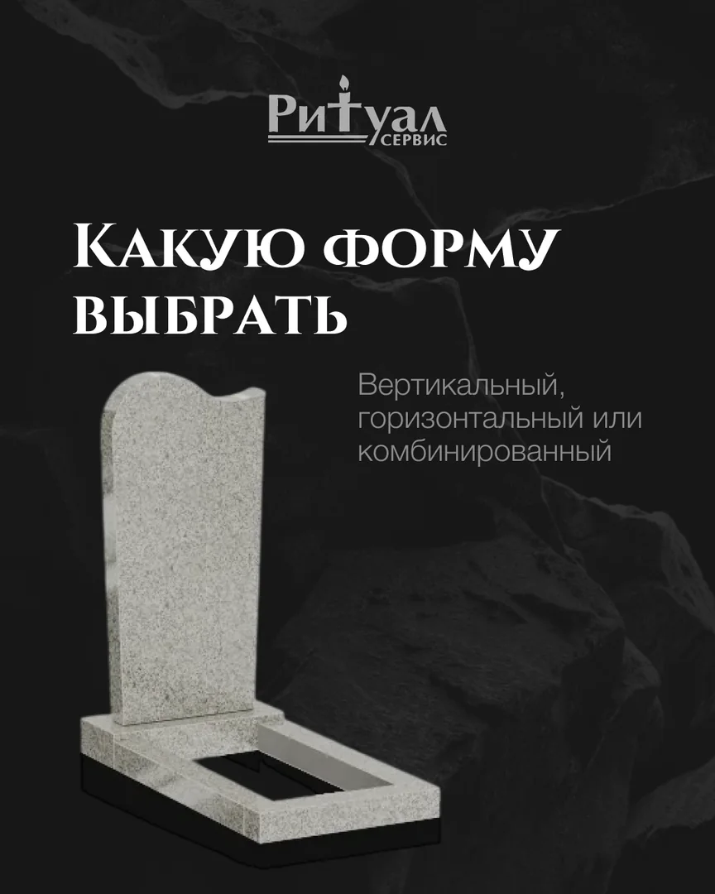

Ритуальные услуги · VK, Telegram и MAX · июль 2026
Как объяснить сложный выбор спокойно — без давления и шаблонных обещаний
Для «Ритуал‑С» собрали контент‑месяц вокруг реальных вопросов клиента: материал, форма, факторы стоимости, производство, уход и благоустройство. Всё — в одной сдержанной визуальной системе.
Финальных кадров в утверждённом комплектеВ кейсе открыты 34 нейтральных макета. Персональные и чувствительные материалы не публикуем.



Маркетинговая задача
Снять тревогу до разговора с менеджером
В чувствительной сфере человек редко начинает с заявки. Сначала он пытается понять варианты, сравнить материалы, разобраться в цене и убедиться, что ему объяснят всё без давления.
Что человек хочет понять
«Как выбрать и не ошибиться?»
Гранит или мрамор?
Почему отличается цена?
Когда устанавливать?
Как выбрать форму?
Как ухаживать?
Где можно сэкономить?
Как отвечает контент
Объясняет выбор по шагам
Вместо общего «обращайтесь к нам» — отдельные материалы про свойства камня, конструкцию, производство, уход и варианты комплектации.
Логика: вопрос → понятное объяснение → спокойный выбор → сообщение компании.
Архитектура месяца
Семь рубрик закрывают путь от вопроса до обращения
План не превращается в двадцать одинаковых продаж. Полезные темы создают доверие, витрина показывает выбор, примеры и отзывы снижают сомнение, а предложения дают повод написать.
Полезное
Материалы, сроки, форма и уход.
Витрина
Модели, производство и детали.
Работы
Как задача превращается в решение.
Предложение
Линейки и сезонные поводы.
Закулисье
Камень, мастерская и процесс.
Доверие
Отзывы о работе и отношении.
Мифы
Спокойный разбор заблуждений.
Материал начинает не с бренда, а с понятной ситуации выбора.
Карусель раскладывает сложную тему на короткие слайды.
Формы, камень и комплектация показаны наглядно.
Призыв продолжает помощь, а не давит продажей.
Продукт внутри
План, безопасная витрина и четыре карусели целиком
Макеты показаны без обрезки. Можно пройти весь план, открыть выбранные обложки и листать 28 слайдов четырёх нейтральных каруселей.
20 публикаций
От базовых вопросов к ассортименту и доверию
Темы чередуются: человек не видит подряд одинаковые офферы и постепенно получает основания для спокойного обращения.
Работы проекта
10 обложек в одной системе в одной системе
Персональные памятники, имена, лица, даты и конкретные цены исключены. Нажмите на макет, чтобы открыть его крупно.
Публикация 01 · 7 слайдов
Гранит или мрамор?
Сравнение переводит техническую тему в простой выбор по долговечности, деталям и месту установки.
1 / 7
Публикация 08 · 7 слайдов
Почему один памятник дороже другого
Цена объясняется через материал, форму, композицию и ручную работу — без скрытых обещаний и конкретных сумм.
1 / 7
Публикация 12 · 7 слайдов
Какую форму выбрать
Вертикальная стела, горизонтальная плита, комбинированный и двойной вариант показаны рядом и объяснены по назначению.
1 / 7
Публикация 17 · 7 слайдов
Эконом-линия без ощущения шаблона
Материал объясняет, за счёт чего модель становится доступнее, и сохраняет возможность персонализации.
1 / 7
От вопросов аудитории к финальному комплекту
Каждый специалист отвечает за свой слой
Маркетолог собирает логику и тексты, дизайнер превращает темы в систему, менеджер ведёт согласование и передачу материалов.
- 01Собрали вопросы выбора
Камень, форма, стоимость, сроки, уход и благоустройство.
- 02Разложили их по семи рубрикам
Полезное, продукт, работы, предложения, процесс, отзывы и мифы.
- 03Собрали спокойную визуальную систему
Крупная типографика, фактура камня и понятные продуктовые схемы.
- 04Упаковали сложные темы в карусели
Пять материалов по семь слайдов вместо перегруженных одиночных карточек.
- 05Согласовали визуал
Готовый комплект содержит 15 одиночных макетов и 35 слайдов каруселей.
Почему система продаёт бережно
Контент помогает принять решение, а не торопит его
В этой сфере доверие возникает из ясности. Поэтому мы показываем не только продукт, но и логику выбора, процесс и границы каждого решения.
Сложное разделено на шаги
Один слайд — одна мысль. Человек не тонет в характеристиках.
Есть критерии выбора
Материал, форма и работа мастера объясняются конкретно.
Виден организованный процесс
Производство и примеры показывают, что за услугой стоит система.
Сообщение — продолжение помощи
Призыв предлагает подобрать вариант под задачу, а не купить вслепую.
Результат проекта
Готовый результат проекта
По кейсу можно оценить план, тексты, визуальную систему и финальный объём. Охваты, заявки и продажи не называем без отдельной аналитики.
Что сделали
- контент-план из 20 публикаций;
- 15 одиночных макетов и 5 каруселей;
- по 7 слайдов в каждой карусели;
- 50 изображений в готовом комплекте;
- визуал утверждён и передан дальше по процессу.
Итог проекта
Нет выдуманных охватов, обращений, продаж или окупаемости. Фактический выход всех публикаций не называем подтверждённым.
В итоговый комплект вошли публикации и карусели; истории в объём кейса не входят.
У вас сложный продукт или чувствительная услуга?
Превратим вопросы клиентов в понятный контент‑месяц
Маркетолог выстроит темы и тексты, дизайнер соберёт визуал, менеджер проведёт согласование. 10 постов — 4 990 ₽; карусели можно добавить в конструкторе.